class: center, middle # Topic 2: The Shallow Water Model MATH3261/5285 Fluids, Ocean, and Climate [{Shane Keating}](https://srkeating.com/), School of Mathematics & Statistics UNSW Sydney, Term 1 2019 .footnote[Created with [{Remark.js}](http://remarkjs.com/) using [{Markdown}](https://daringfireball.net/projects/markdown/) + [{MathJax}](https://www.mathjax.org/)] --- class: middle, left # 2.1 The shallow water model > "Choke me in the shallow water before I get too deep." > Edie Brickell, *What I am*. --- class: middle, center ## 1-layer shallow water model <img src="shallow-water1.png" align="center" width="100%"/> --- class: middle, center ## 1.5-layer shallow water model <img src="shallow-water2.png" align="center" width="100%"/> --- class: middle, center ## 2-layer shallow water model <img src="shallow-water3.png" align="center" width="100%"/> --- class: middle, left # 2.2 Vorticity and potential vorticity > "Donde escono quei vortici?" > ("Whence come these vortices?") > Wolfgang Amadeus Mozart, *Don Giovanni, Act II* --- class: middle, left Define 3D vorticity: $$\boldsymbol{\omega} = \boldsymbol{\nabla \times v}$$ $$\left( \begin{array}{c} \omega_1 \\\ \omega_2 \\\ \omega_3 \end{array} \right) = \left\[ \begin{array}{ccc} \boldsymbol{\hat{x}} & \boldsymbol{\hat{y}} & \boldsymbol{\hat{z}} \\\ \partial_x & \partial_y & \partial_z \\\ u & v & w \end{array} \right\] = \left( \begin{array}{c} w_y - v_z \\\ u_z - w_x \\\ v_x - u_y \end{array} \right)$$ --- class: middle, left Define circulation around a closed loop $\mathcal{C}$: $$\Gamma = \oint_\mathcal{C} \boldsymbol{v \; \cdot} \; d \boldsymbol{r}$$ Stokes' theorem: `$$\oint_\mathcal{C} \boldsymbol{v \; \cdot\; } d \boldsymbol{r} = \int_\mathcal{S} \boldsymbol{\nabla \times v \; \cdot\; } d \boldsymbol{S} = \int_\mathcal{S} \boldsymbol{\omega \; \cdot\; } d \boldsymbol{S}$$` Circulation around $\mathcal{C}$ = vorticity enclosed by $\mathcal{C}$ Vorticity is the *circulation per area* around an infinitessimally small closed contour. --- class: middle, center ## Solid body rotation with angular velocity $\Omega$ 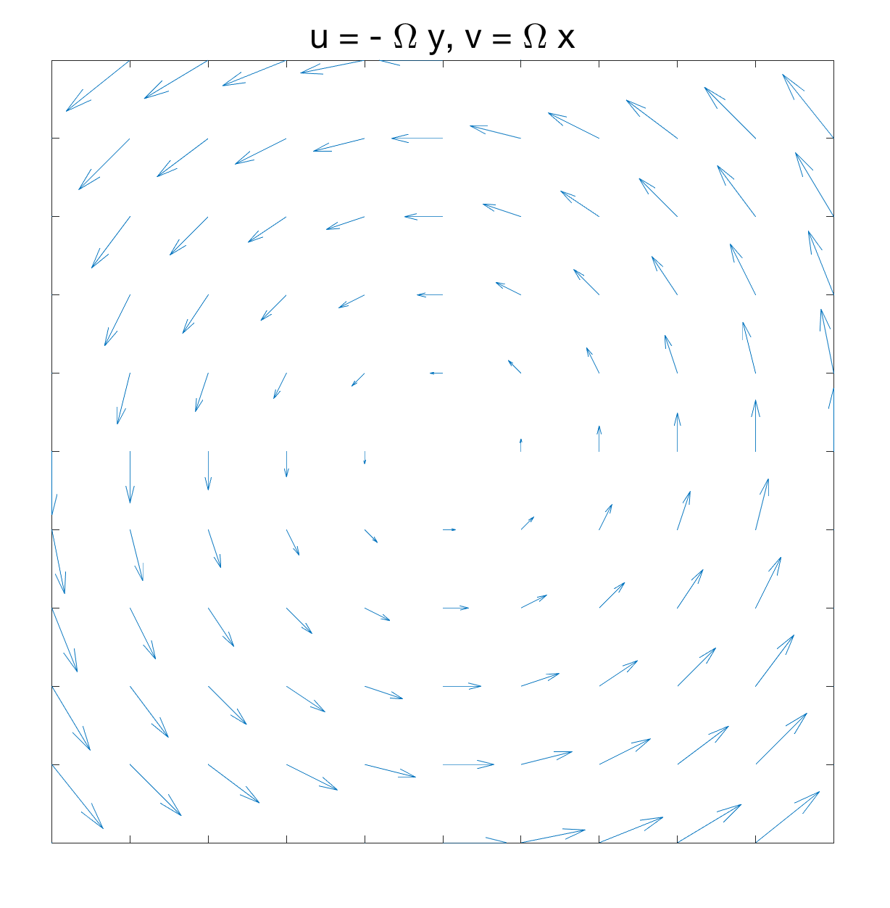 $$u = - \Omega y, v = \Omega x$$ $$\omega_3 = v_x - u_y = 2 \Omega$$ Uniform vorticity: the same value at all points. Note the factor of $2$! --- class: middle, center ## Divergent flow 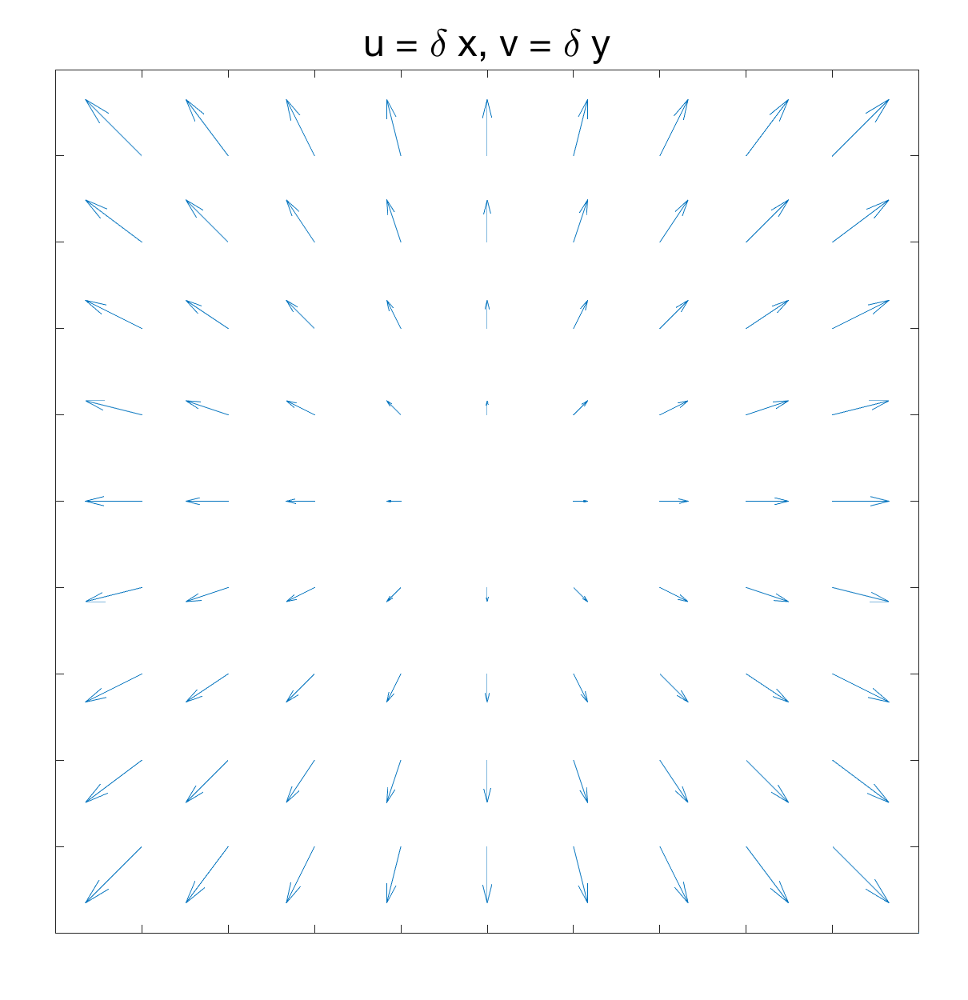 $$u = \delta x, v = \delta y$$ $$\omega_3 = v_x - u_y = 0$$ Divergent / convergent flows are irrotational (zero vorticity). --- class: middle, center ## Shear flow 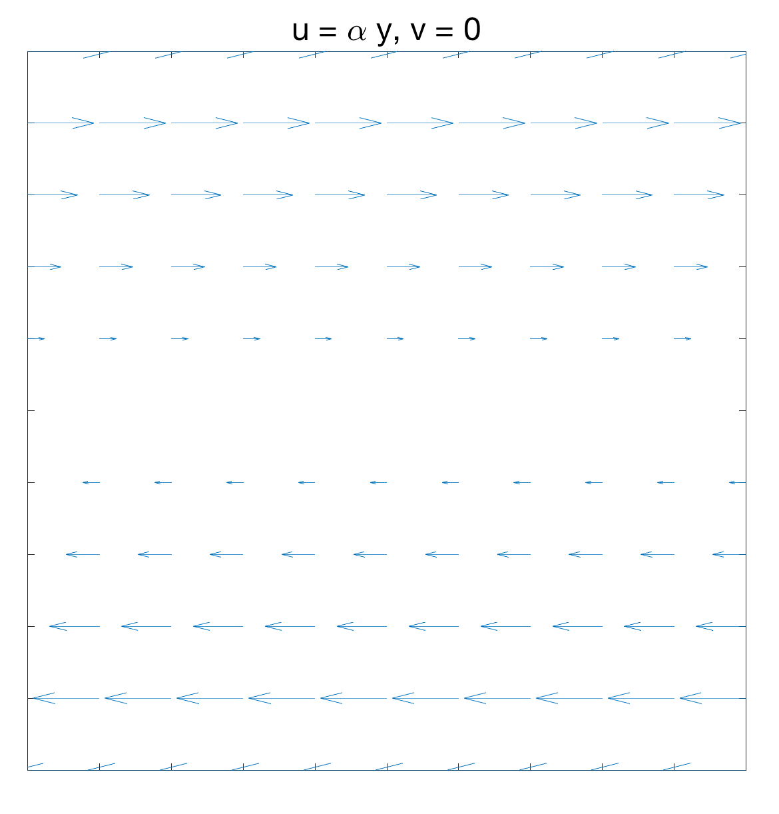 $$u = \alpha y, v = 0$$ $$\omega_3 = v_x - u_y = - \alpha$$ Even parallel flows can have vorticity! --- class: middle, center ## Conservation of potential vorticity <img src="pv-conservation.png" align="center" width="80%"/> --- class: middle, left # 2.4 The Hadley Cell > "The answer, my friend, is blowin' in the wind." > Bob Dylan --- class: middle, center 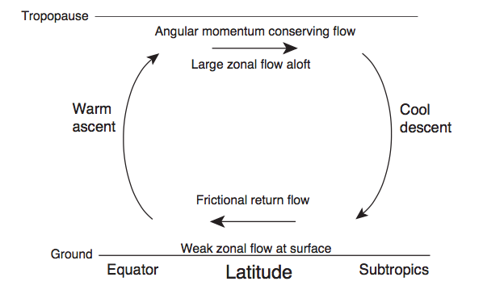 (Credit: G. Vallis) --- class: middle, center 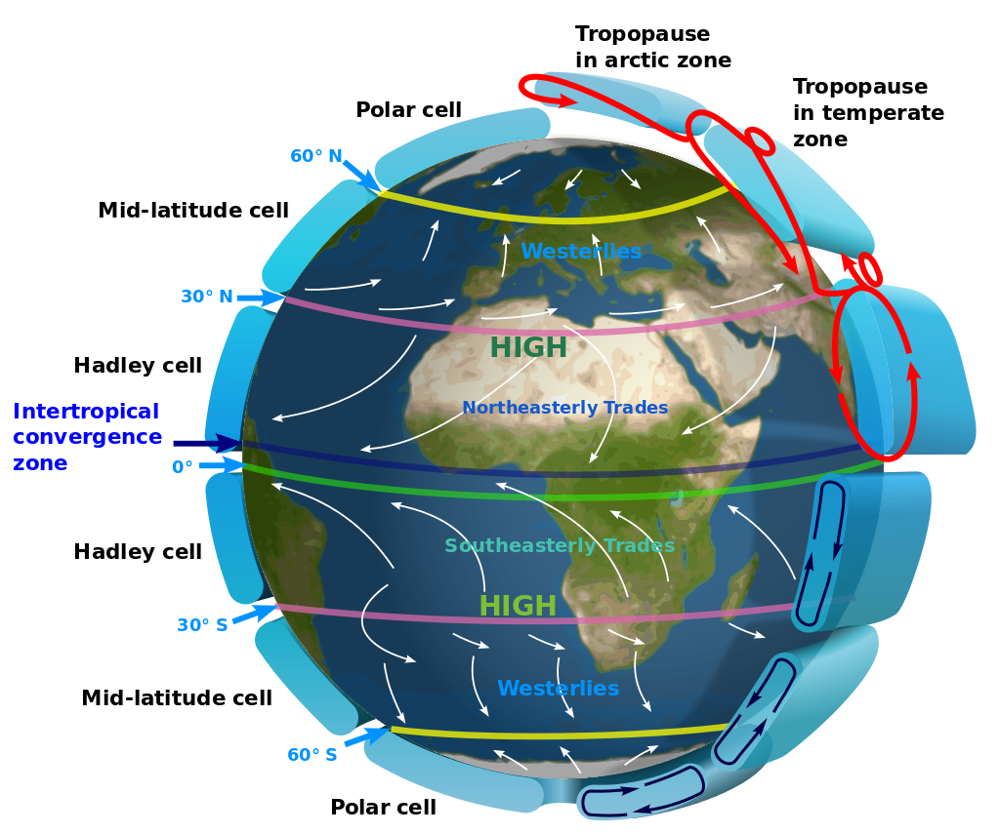 --- class: middle, left # 2.5 Shallow water waves > "Is there any peace > In ever climbing up the climbing wave?" > Alfred, Lord Tennyson, *The Lotus-eaters* --- class: middle, center 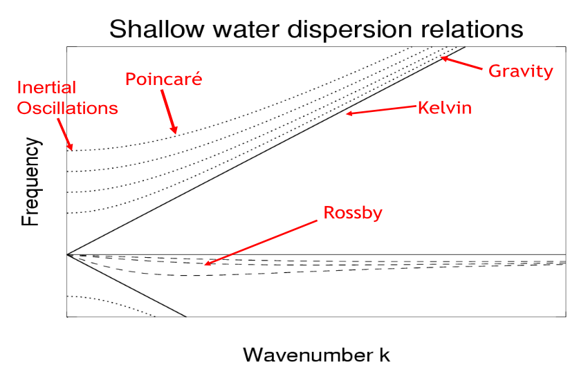 (Credit: I. Simpson) --- class: middle, left # 2.6 Rossby waves > "Perhaps I occasionally sought to give, or inadvertently gave, to the student a sense of battle on the intellectual battlefield. If all you do is to give them a faultless and complete and uninhabited architectural masterpiece, then you do not help them to become builders of their own." > Carl-Gustaf Rossby --- class: middle, center 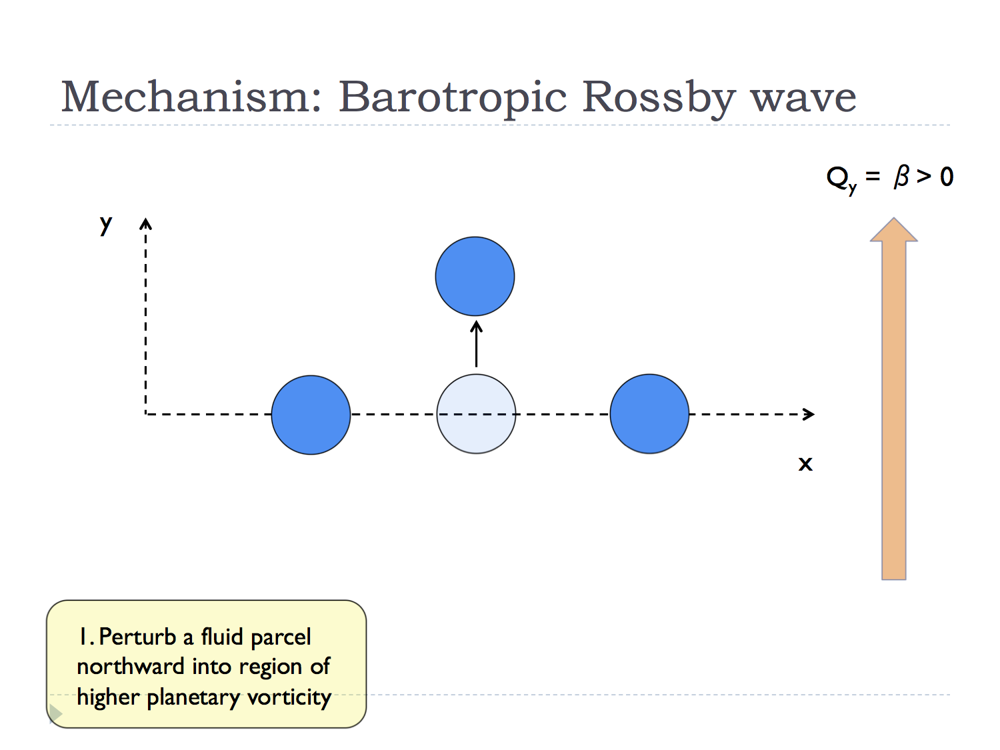 --- class: middle, center 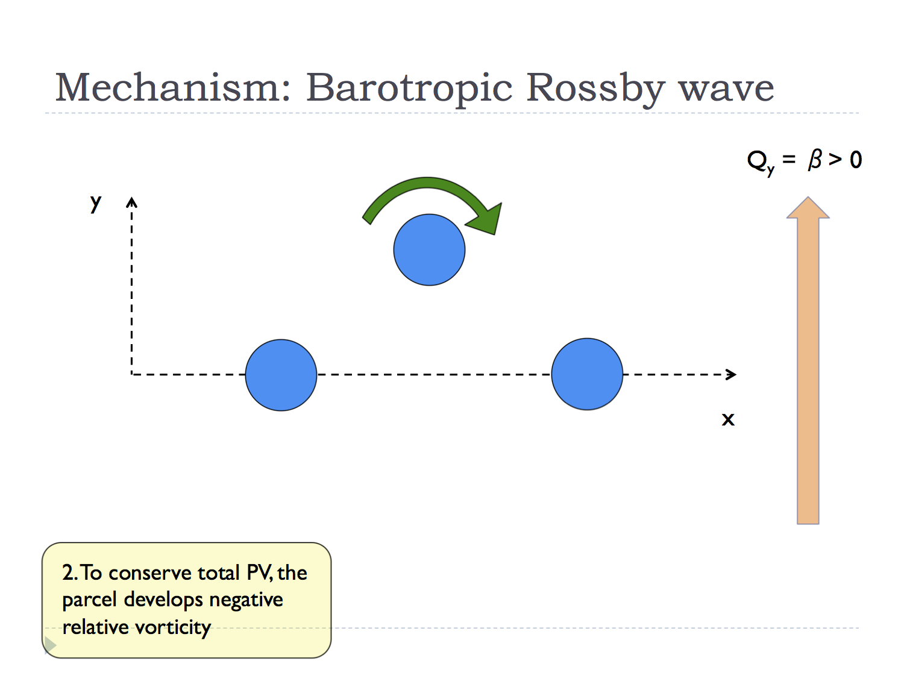 --- class: middle, center 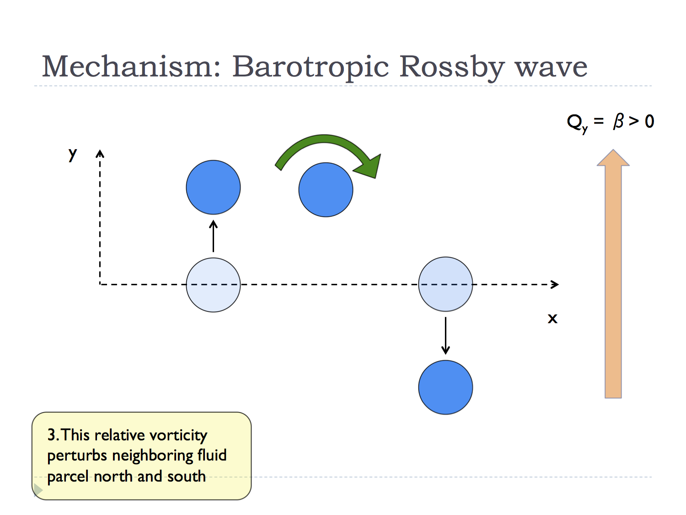 --- class: middle, center 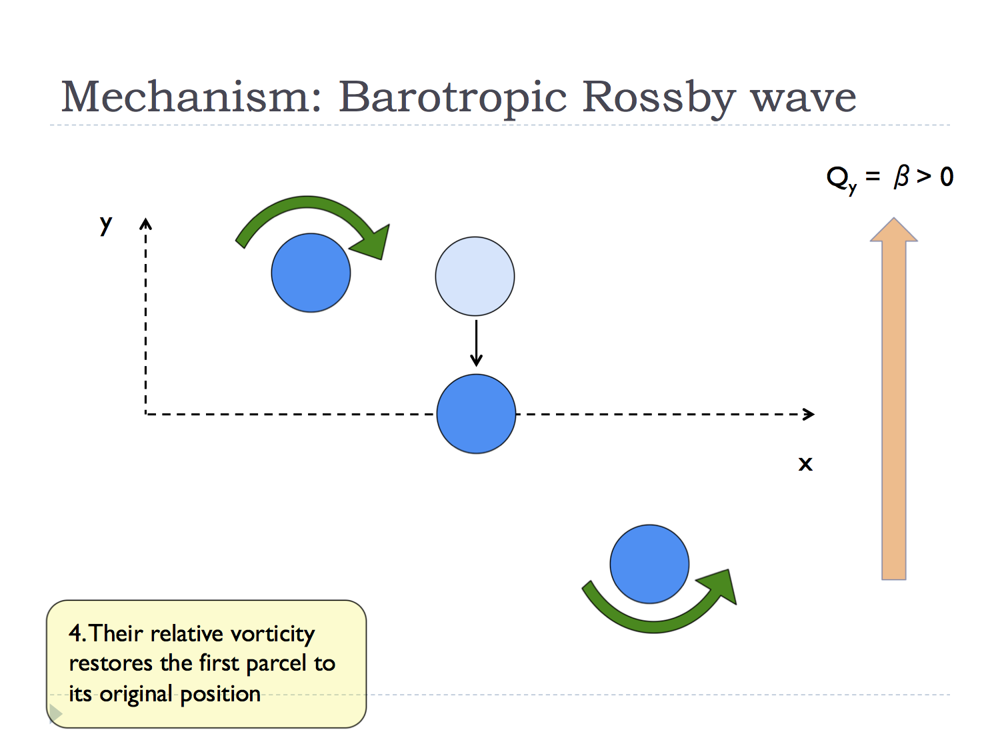 --- class: middle, center 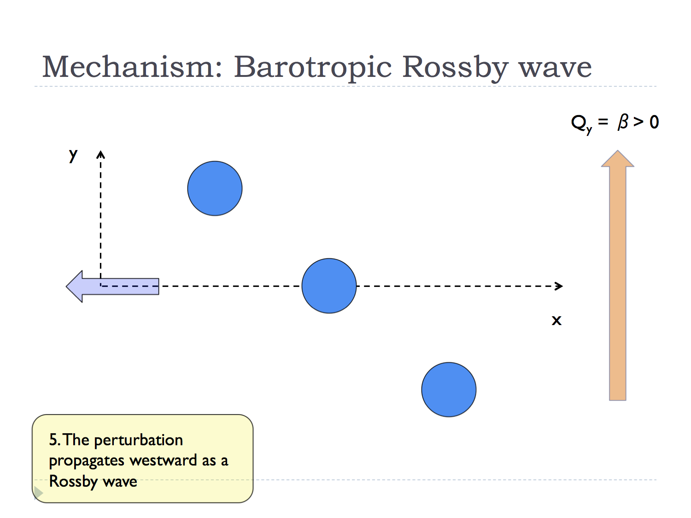